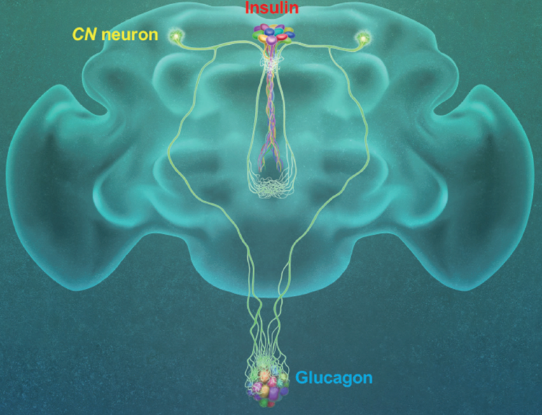

연구성과 10선
연구성과 10선
KAIST RESEARCH ACHIEVEMENTS
인슐린, 글루카곤 분비를 조절하는
한 쌍의 글루코스 감지 뉴런
생명과학과 서성배
요약
스트레스를 받을 때 당뇨병이 더욱 심해지고 혈당 조절에 어려움을 겪는 이유는 뭘까? 뇌가 체내 혈당 농도 조절에 중요한 역할을 한다는 것은 임상적으로 확인된 사실이지만 구체적인 생물학적 관계는 아직 제대로 규명되지 않았다. 이 연구에서 초파리 모델 시스템을 이용하여 뇌 속에 체내 혈당 조절에 직접적인 기능을 하는 포도당 감지 신경세포를 발견하고 그 구체적 원리를 규명했다. 동물의 뇌 속에는 미각이 발달 되기 이전부터 존재해온 포도당 감지 신경세포가 존재 한다. 인간의 포도당 감지 신경세포들은 주로 시상하부나 후뇌 등 뇌의 부위에 다양하게 분포되어있어 중요한 생리학적 기능을 담당할 것으로 생각되어 왔다. 이는 약 50년 전 최초로 발견되었으나 최근까지도 이들의 생물학적 기능에 대한 명확한 해답을 얻지 못하고 있었다. 뇌 속의 포도당 감지 신경세포들은 어떠한 기능을 할까? 이 연구에서는 한 쌍의 신경세포가 체내 포도당 농도 증가에 직접적 반응하여 활성화되는 특징을 가지고 있으며, 췌장 세포가 혈당에 직접 반응하지 않고 그 신경세포를 통해서 반응하는 기작을 세계적으로 처음 밝혀냈다.
연구배경
한국인의 당뇨병 유병률은 14%로 2018년 기준 환자 500만 명을 돌파했다. 당뇨병 증가속도 세계 1위, 잠재적 환자는 4명 중 1명꼴이지만 발병원인은 정확하게 규명되지 않았다. 유전적 요인과 환경적 요인이 존재하지만 대부분 췌장 인슐린 분비세포 기능이 저하되면서 병이 시작되는 것으로 알려져 있다. 최근에는 뇌가 당뇨병의 정도에 영향을 미칠 수 있다는 사실이 밝혀지기도 했다. 대부분 당뇨병 환자에게 스트레스가 당뇨병 증세에 영향을 미치고 혈당 조절을 어렵게 하는데 뇌 어딘가에 존재하는, 알려지지 않은 혈당 조절 능력 때문이라는 것이 학계 주장이다. 저희 연구팀은 오래전부터 초파리를 이용해 혀나 내장기관뿐 아니라 동물의 뇌 속에도 포도당을 감지하는 세포와 수용체가 존재한다는 사실을 연구해왔다. 인간 두뇌의 시상하부나 후뇌 등에 포도당을 감지하는 신경세포가 존재할 것이라는 점은 예측돼왔지만, 이런 세포들이 어떻게 포도당을 감지해 몸의 각 부위에 명령을 내리는지에 대한 연구는 지금까지 없었다.
저희는 초파리 전체 뇌 신경조직을 대상으로 한 광범위한 스크리닝을 통해 초파리가 포도당의 영양적 가치를 판단하는데 필수적인 한 쌍의 신경세포를 발견했다. 이 한 쌍의 신경세포가 체내 포도당 농도 증가에 반응해 활성화되는 특징을 가지고 있음을 파악했다.
연구내용
이번 연구는 약학적, 유전학적 방식을 사용해 이들 세포가 인간의 췌장 세포와 유사한 분자적 시스템을 통해 포도당을 인지한다는 사실을 확인했다. 이를 기반으로 연구팀은 포도당 감지 신경세포가 어떠한 신경세포 및 조직에 신호를 전달하는 지에 대해 연구했다. 연구팀은 해당 신경세포가 초파리의 인슐린 생산을 담당하는 신경조직 insulin-producing cells, IPCs)과 글루카곤의 기능을 하는 단백질을 생산하는 조직(AKH-producing cells)에 각각 축삭돌기(Axon, 신경 세포체에서 뻗어 나온 돌기)를 이루고 있음을 확인했다. 이 결과는 한 쌍의 포도당 감지 신경세포가 체내 혈당 조절에 중요한 호르몬을 생산하는 조직들에 직접 체내 영양 정보를 전달할 수 있다는 가능성을 발견한 것이다.

이를 확인하기 위해서 저희는 포도당 감지 신경세포와 두 호르몬 분비 조직들 사이의 물리적, 기능적 상호작용들을 확인했다. 그 결과 한 쌍의 포도당 감지 신경세포가 활성화된 경우 인슐린 생산 조직 역시 활성화되며 반면에 글루카곤 생산 조직의 활동은 억제됨을 확인했다. 또한, 저희는 포도당 감지 신경세포를 억제할 경우 인슐린 생산 조직의 억제로 인해 혈중 인슐린 농도가 감소하며, 글루카곤 생산 조직에 대한 억제가 사라짐에 따라 혈중 글루카곤 농도가 증가됨을 확인했다. 이들 호르몬의 변화로 인해 혈중 포도당 농도가 유의미하게 증가함을 최종적으로 확인했다. 뇌 속에 단 한 쌍의 포도당 감지 신경세포만의 활동을 조절함으로써 당뇨병의 증상을 가지는 초파리를 인위적으로 만들 수 있는 것이다.
한발 더 나아가 저희는 초파리에서 신경전달 기능을 하는 짧은 단백질의 한 종류인 sNPF(small Neuropeptide F)가 해당 포도당 감지 신경세포에서 발현됨을 파악하고 포도당에 노출됐을 때 이 신경전달물질이 분비됨을 확인했다. 또한, 저희는 인슐린 생산 조직과 글루카곤 생산 조직에서 sNPF 의 수용체가 포도당 감지 신경세포의 신호를 받는데 필수적인 역할을 함을 증명했다.
기대효과
이번 연구 결과는 초파리에서 의미 있는 발견을 했다는 사실을 넘어 당뇨병 원인 규명과 치료의 패러다임을 근본적으로 바꿀 수 있는 계기를 마련했다고 하겠다. 뇌에서 만들어지는 신호가 체내 혈당 조절에 근본적인 역할을 함이 구체적으로 규명되면 한 단계 진보된 당뇨병의 진단 및 치료뿐 아니라 비만, 대사질환 치료도 가능해질 것이다.
연구성과
[논문 1] Yangkyun Oh, Jason Lai, Holly Mills, Hediye Erdjument-Bromage, Benno Giammarinaro, Khalil Saadipour, Justin Wang, Jin-Yong Park, Farhan Abu, Thomas A. Neubert, Greg S. B. Suh (2019) A glucose-excited neuron pair regulates insulin and glucagon in Drosophila. Nature 574, 559-564.
[논문 2] Jineun Kim, Seongju Lee, Yi-Ya Fang, Shreelatha Bhat, Anna Shin, Koichi Hashikawa, Daesoo Kim, Jong-woo Sohn, Dayu Lin, Suh, Greg S (2019) Rapid, biphasic CRF neuronal responses encode positive and negative valence. Nature Neuroscience 22, 576-586
연구비지원
This research was supported by KAIST Chancellor’s fund and Samsung Science & Technology Foundation